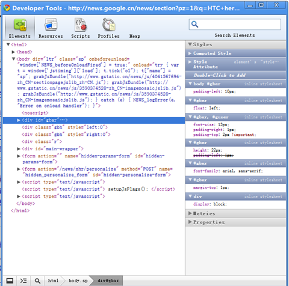

接到一个任务，把现有的一个.NET做的网站外观及布局进行改版。以前没有做过此类工作，工作嘛，没有办法，只好来了。
.NET之前还是有所了解的。因此我首先读了一本书[Beginning HTML with CSS and XHTML Modern Guide and Reference], 能过此书我了解了主要的HTML标签，以及各自的用途。然后通过这本书了解了最基本的CSS用法[Beginning.CSS.Web.Development.From.Novice.to.Professional]。之后又到网上搜索，买了一本经典的网站重构。这本书总体还行，能给读者一个高屋建瓴的把握。不过着实如网上所说，这本书前面大部分费话太多。最后又下载了[CSS禅意花园]和[CSS Mastery]了解了一下。
CSS最核心的东西就是其“盒模型”，弄懂了这个，再加上布局的方法，一切皆可搞定。开发过程中我大量使用了google chrome。和其它同事交流时，他们说最的一个测试的浏览器才是google chrome，而我不是。我第一个拿它来测试，它启动迅速，又有很好用的”开发工具“（在页面上点右键-》审查元素，觉得这个开发工具超级强大[当然喜欢firefox的可以使用其开发工具Web Developer。IE下也有相应的工具，但是不太好用]。chrome上搞定之后，一般来说ie7,8和firefox都是没有问题的。比较容易出现在问题是，一些CSS的默认值是不一样的，所以最好指定一下，如果不指定，不同的浏览器会有不同的效果。最扯淡的是ie6，还好ie6的bug在网上有很多的讨论。去搜一搜一般都能搞定。IE6什么时候才会死啊？郁闷。

还有一个经验是，要想把CSS写的完美，精炼，好的HTML代码是必须的。如果网页生成的HTML代码一堆混乱，我看着就头疼，看到烂代码，总是会去改后台代使其生成精炼的语义化的HTML。